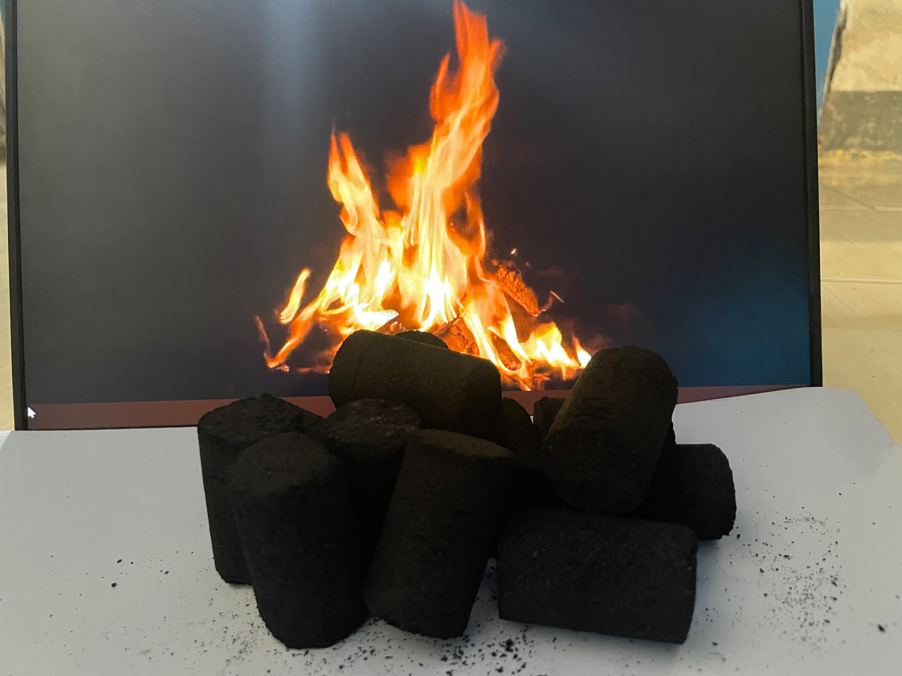

DOKUMENTASI KEGIATAN · KKN KELOMPOK 28
JEJAK KEGIATAN EcoBriq.
Melihat dokumentasi penjemuran baglog jamur dan perjalanan pengembangan program EcoBriq di Desa Beririjarak.
LIHAT GALERI ↓
EcoBriqPotensi baru dari limbah baglog jamur
GALERI DOKUMENTASI
Perjalanan EcoBriq di Desa Beririjarak.
Foto dan video penjemuran baglog jamur merupakan dokumentasi asli kegiatan. Gambar lainnya diberi label ilustrasi pendukung agar tidak disalahartikan sebagai dokumentasi lapangan.